Wellness · Instagram Content System
An ongoing Instagram content system for a nutrition and wellness clinic — designed to keep the clinic visible and active, reinforce expertise, and remind existing audiences about services, packages, and return visits.
When I joined, the clinic already had substantial service-explanation content and an established visual identity. The primary need was ongoing Instagram activity that demonstrated the clinic was active, services were genuinely being delivered, previous results remained relevant, and audiences were reminded to return or refer others.
The project was oriented more toward retention, trust reinforcement, brand salience, service reminders, and referral than pure initial awareness.
BodySense needed communication that helped people stay connected, maintain healthier habits, and keep the clinic relevant between visits.
Build a communication system that sustained visibility, reinforced trust, and encouraged long-term engagement.
Education, proof, reminders, and real activity kept the clinic—and healthy habits—present in daily life.
The clinic served people at different stages of their relationship—not just first-time visitors. Communication therefore had to support each stage with relevant content.
Content was planned around recurring client needs—not individual posts.
The Feed used a recurring three-part mix, each type doing a different job:
Foods, nutrition, and related education — built around real specialist recommendations.
Real examples of client results, reinforcing that outcomes were genuinely delivered.
Practical food, exercise, and lifestyle content — accessible and repeatable.
Stories weren't isolated promotional posts — they were sequenced to move audiences from information to demonstration to offer. An example three-day sequence:
Recurring patterns included Explain → Demonstrate → Offer and Result → Explain → Show Real Activity → Remind About Service. Stories covered fun content, occasions, testimonials, short education, food properties, recipes, clinic environment, behind-the-scenes activity, real service/device videos, and package reminders.
Different content types served different communication purposes. Together, they formed one connected content system.
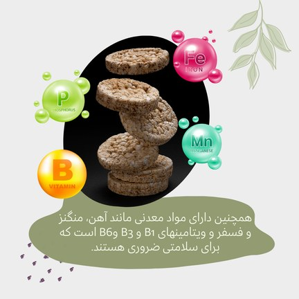
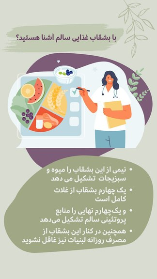
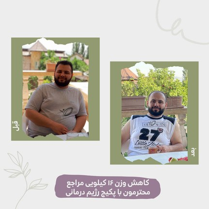
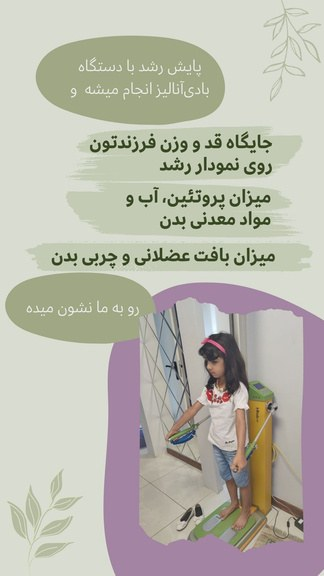
Each content type served a different purpose, but together they created a consistent system that supported long-term engagement.
I owned topic selection and content development, using the specialist's domain knowledge and real client experience as inputs. Three input streams fed the calendar:
Topics weren't chosen in isolation. They were shaped by specialist input, client behavior, and recurring questions from everyday practice.
| Recurring Client Need | Audience Question | Content Response |
|---|---|---|
| Everyday nutrition | What should I eat? | Practical nutrition guidance |
| Visible progress | Is this approach working? | Client transformations |
| Trust | Can I trust this clinic? | Real clinic activity |
| Consistency | How do I stay on track? | Stories & reminders |
| Follow-up | When should I come back? | Service reminders |
Content decisions were driven by real client needs—not assumptions or generic nutrition topics.
Some educational posts became reusable client-education assets. The specialist could send a published post directly to a client while giving advice and refer them to it for more explanation.
I managed the full pipeline for educational content, from topic discovery through publishing, with domain accuracy validated by the clinic specialist.
Routine questions — appointment requests, address, package prices, general service information — were answered directly using standardized responses I created. Questions requiring nutrition or device expertise were escalated to the appropriate specialist. Consistent voice, faster response, and no cross-wires between admin and clinical.
Complete period-level analytics were not available. Two surviving Story Insights are shown below as selected performance examples — not evidence of an overall performance trend.
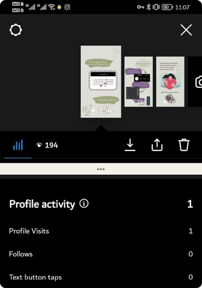
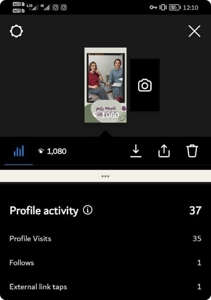
Educational and recipe-based posts appeared to generate stronger Save and Share behavior than other content types.
Recalled observation; not validated by the recovered Insights.
Informal, problem-led Stories appeared to generate more direct questions and replies than educational Feed posts.
Hypothesis: more conversational, direct, problem-oriented Story language contributed to this. An observed pattern, not proof that tone alone caused the increase.
Behind-the-scenes videos, real clinic activity, and devices in use were intentionally used to increase credibility and demonstrate real service delivery.
The clinic perceived higher appointment activity after Instagram became more active, but no baseline, booking dataset, or attribution evidence proves Instagram caused the increase — so I don't present "increased appointments" as a portfolio result.
Performance observations informed future decisions within the limits of available evidence.
An experience-informed concept exploring how the BodySense experience could evolve into a new English-language wellness brand.
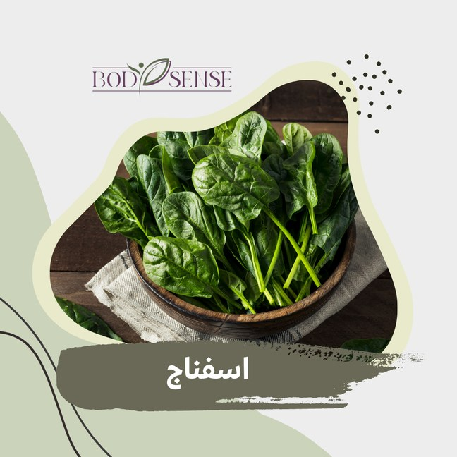
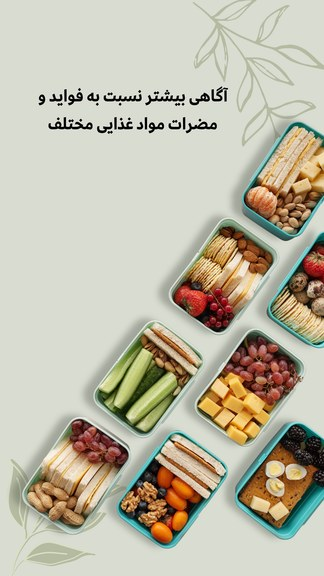
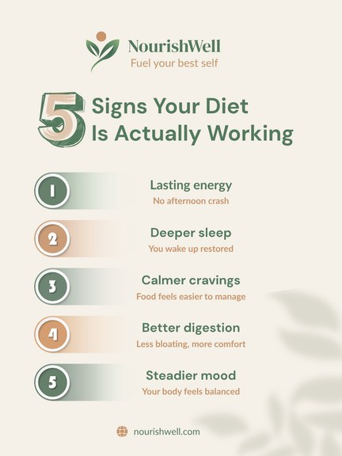
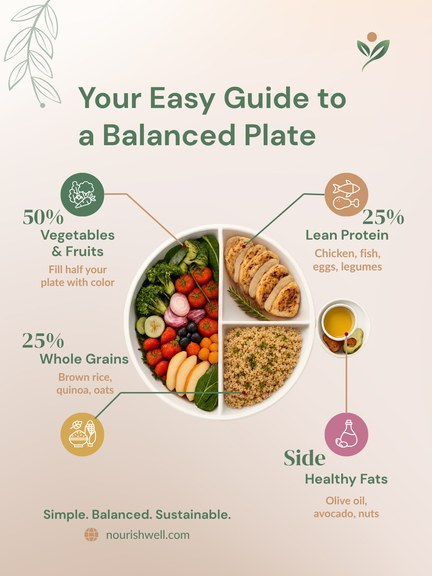
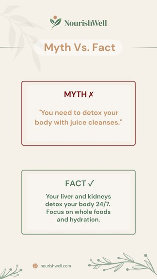
A cohesive brand identity extended across multiple content formats.
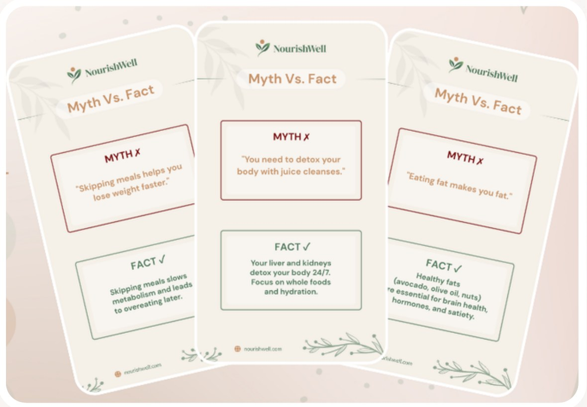
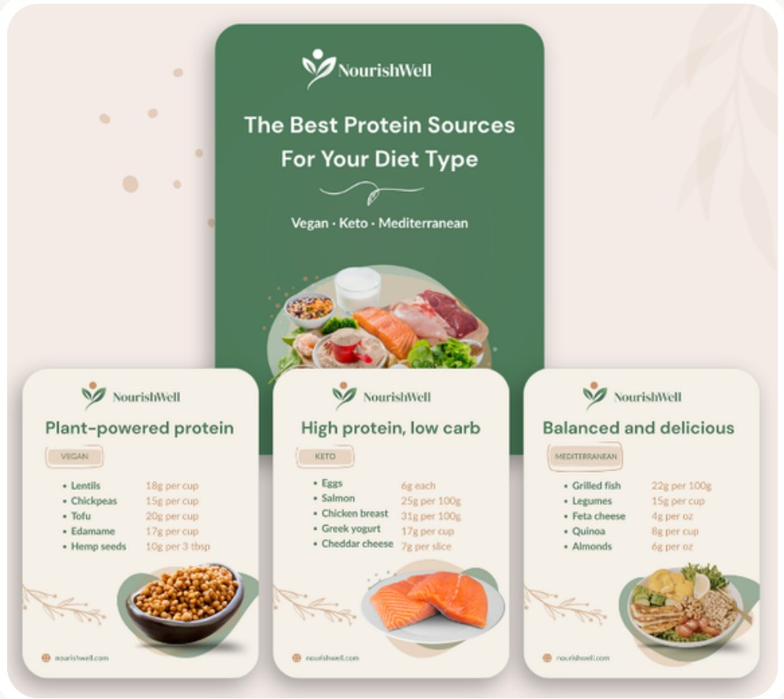
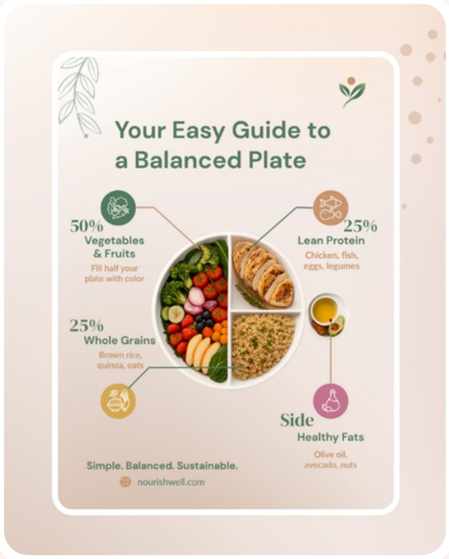
Selected Feed & Story Assets
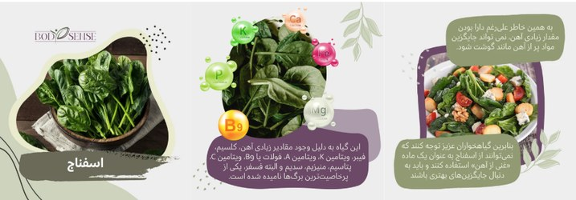
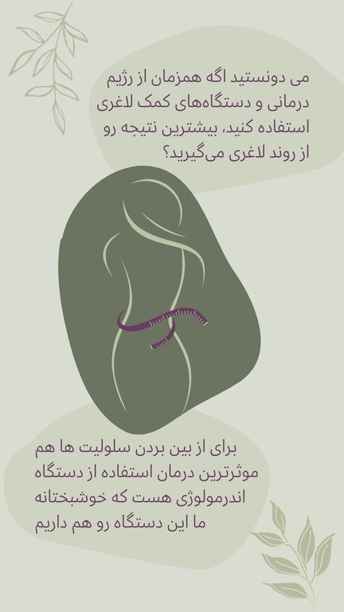
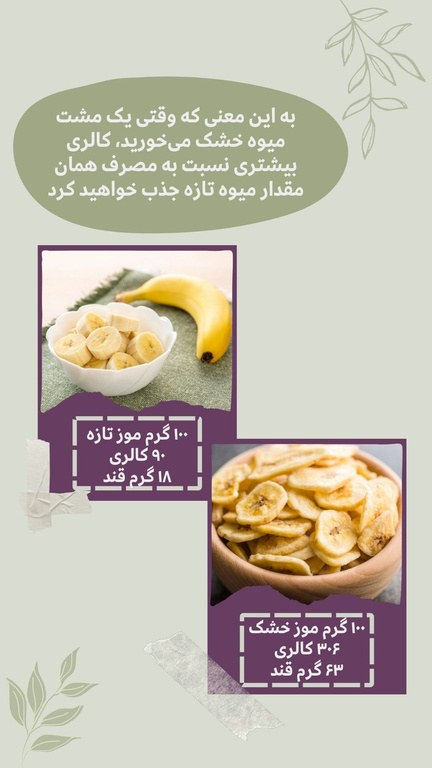